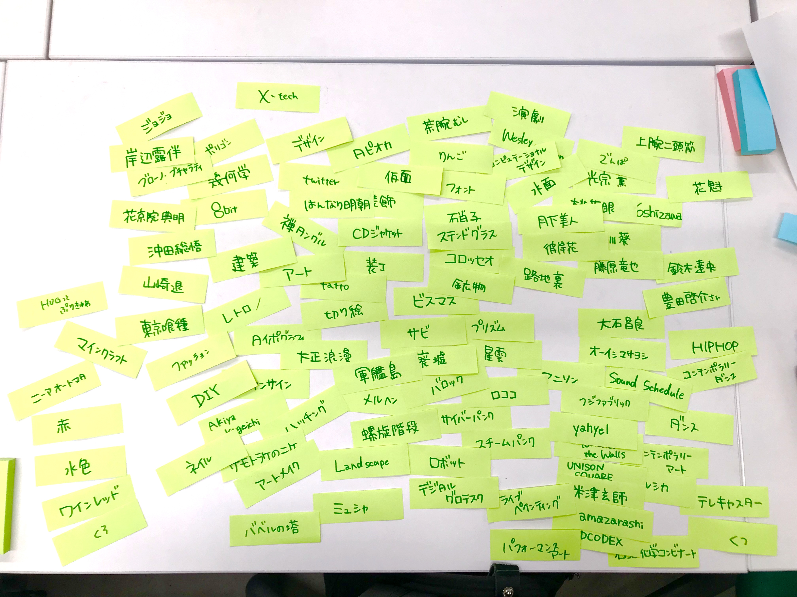
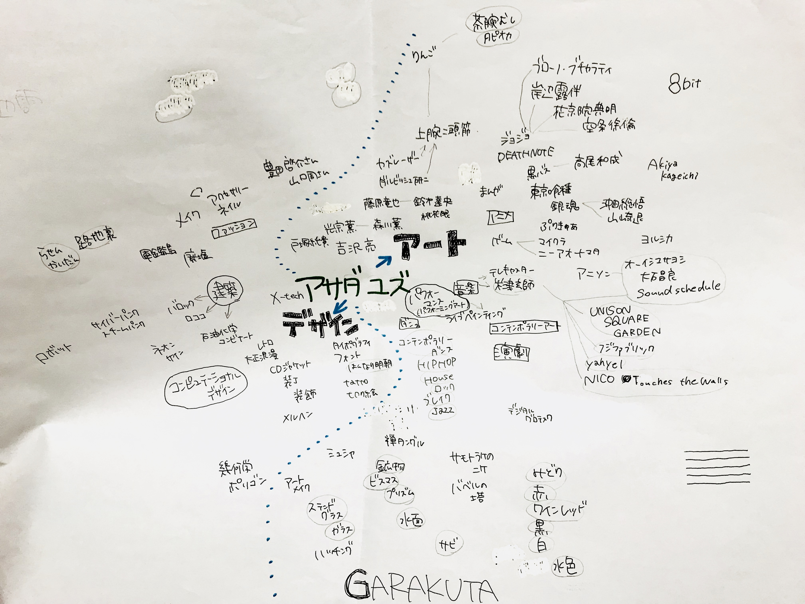
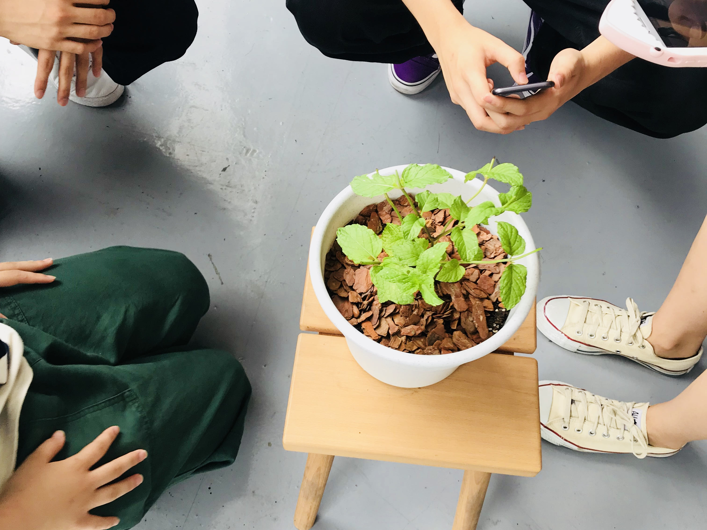

MESH
2018/07/12
MESHの新しい使い方を考えた。
授業１日目 / マインドマップの作成。

まずは好きなものをとにかくどんどん出して

ジャンルごとに整理しつつマインドマップにまとめた。
好きなもののジャンルが広く、
具体的なものと抽象的なものが混在していたため、
この作業が一番大変だった。
授業２日目 / MESHを触ってみる
マインドマップを元に振り分けられたグループで
MESHを実際に触って、何ができそうか色々試してみた。

「身体・ストリートカルチャー」グループでは
MESHを用いた
①植物とコミュニケーションをとるシステム
②階段を登る人を応援するシステム
③痴漢の撃退方法
④音楽とペインティングパフォーマンス
を考えた。
全て検証してみて、
システムをより深めていけそうなものと、そうでないものを話し合った。
①植物とコミュニケーションを取るシステム
(入力：人感 / 出力：音声・撮影)
②階段を登る人を応援するシステム
(入力：人感 / 出力：音声)
人感センサーで人を感知したら応援ソングが流れる、という仕組みだったが
・感度が高すぎる
・大勢が階段を登る場合一人一人に応援ソングが届かない
・降りる人との差別化をどう測るか
という問題点があり、断念した。